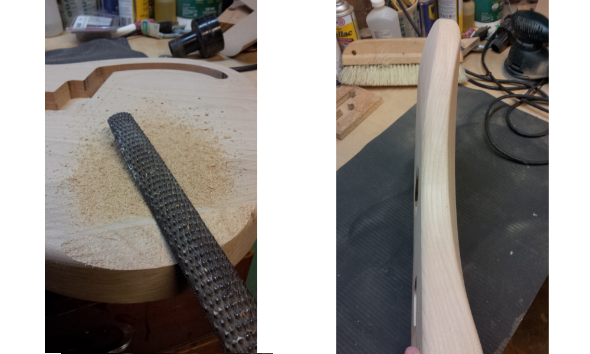
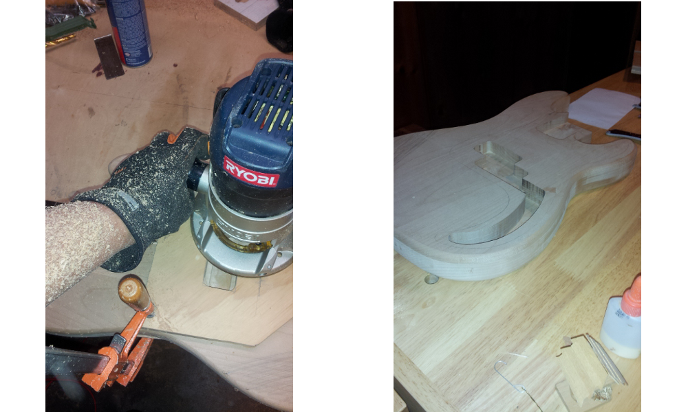
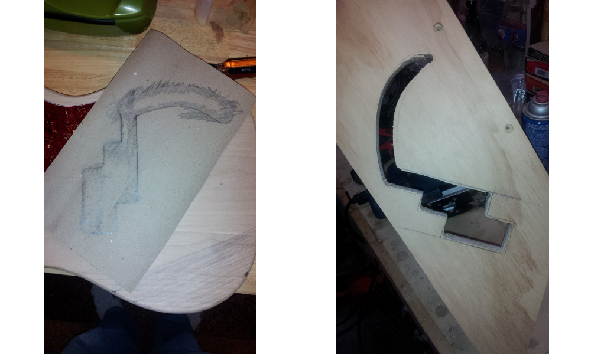
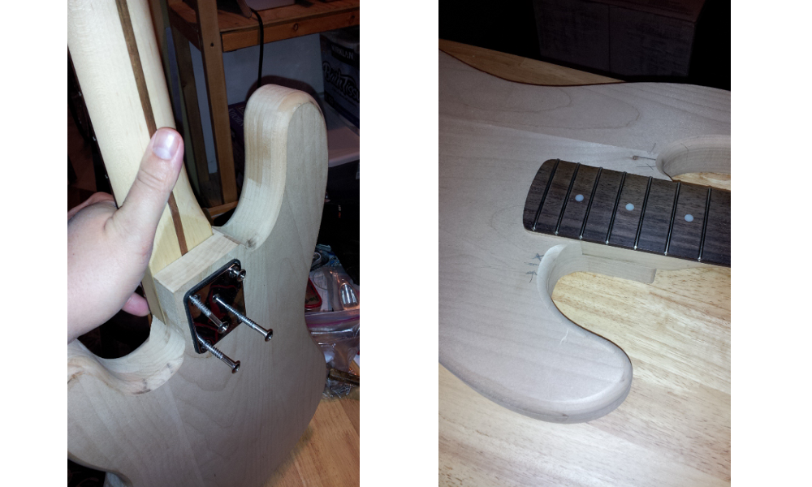

Sometime in late 2012, I convinced my friend Antony to allow me to make him an electric bass. I had just completed a one-off that I thought turned out pretty well (at the time) and thought that it would be fun to make him an instrument. Below is the reverse chronology of the build so far.



